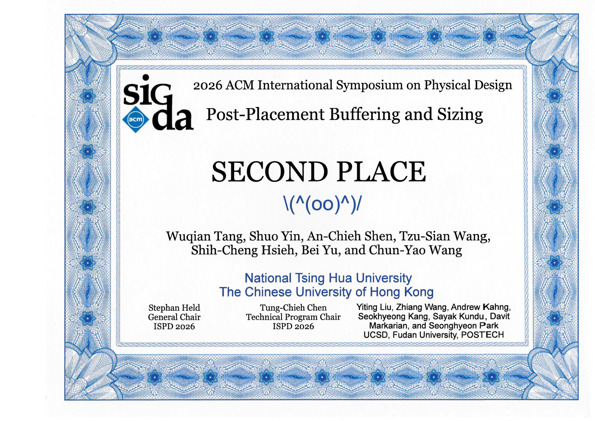

Skip to content
Wuqian Tang
Back to homepage
Awards & Honors · Mar 2026
Second Place, ISPD Contest
Post-placement buffering and sizing
Materials:
[Certificate]
│
Announcements:
[Department]
Certificates
1

Certificate · 2026-03-18 · English
View Original